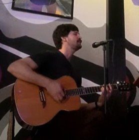
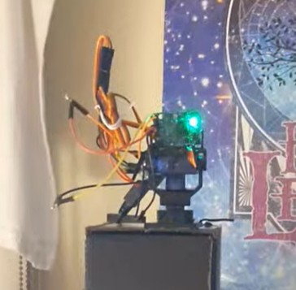
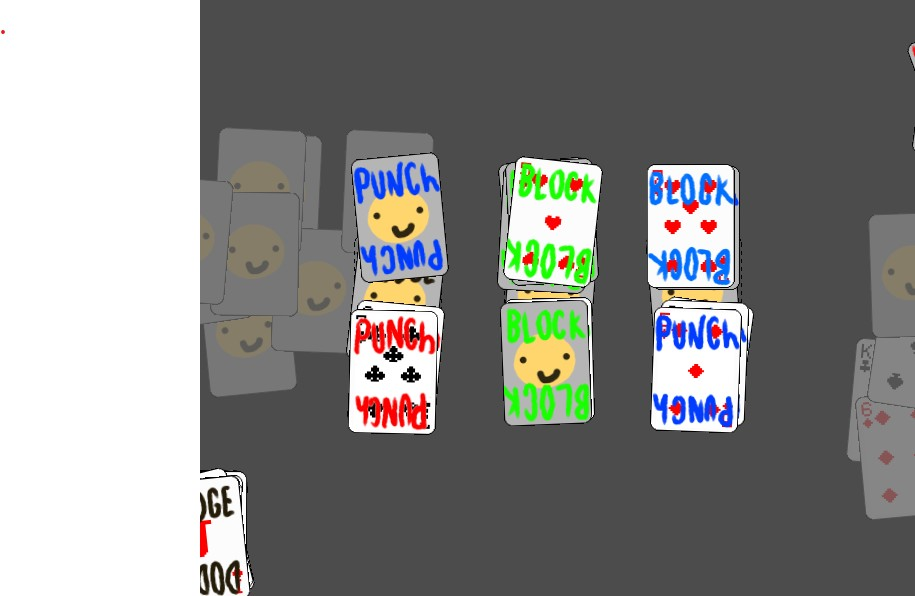
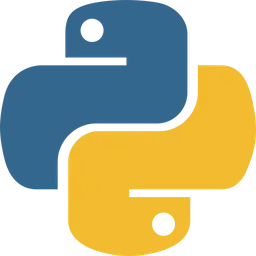

music: front man of band

was the front man of a band, played a few shows, released one single, and produced a number of promotional images
music: solo artist

I write and perform original music and arrangements on a regular basis at local open mic nights.
hardware: face tracker robot

Used the "person sensor" face tracker chip from "Useful Sensors" and a raspberry pico to create a face tracking robot using the example code from the sensor manufacturer. I created a 3d printed housing designed for the clip on the mini pan-tilt servo kit from adafruit. The plan was to make a wearable robot that clips to the brim of a hat. This never fully culminated as I never dove into making a full housing for the robot or a portable power source.
software: Card based video game

Designed a real time card game in Godot. Gameplay is fun but needs tweaking. Planned story mode and betting mechanic not yet realized.
software: "PasteBuddy" data entry tool

Designed a data entry tool that replaced frequently typed phrases with mouse inputs, significantly improving response time in live chats and emails at my call center job.
software:email interface for local ai model.
Set up email listener and an older gpt model (gpt2) that would run on an old laptop of mine but the model didn't behave the way more modern models do and the project was put on hold due to lack of appropriately powerful hardware.
software: STEM bootcamp
Lead project plannning on a bootcamp project with the goal of designing a RAG enabled AI model and planning interface that would help specialists with planning cubesat sattellite missions.
software: RaspBerry Pi web cam interface

Raspberry pi low security web based camera access point. I set up a gen 1 raspberry pi equipped with a camera module and wrote a simple webpage using php to access the camera module. I also made a cute pixel art icon of the camera module for funsies
Software: Python data entry and automation tool

Created a python script that automated a repetitive data entry task at my call center job completing what was expected to be months of work in a weekend.